Ingresá los detalles del equipamiento en desuso para iniciar el protocolo de recolección.

Gracias por aportar al sistema. Los datos de tu hardware fueron procesados. Un operador se pondrá en contacto para coordinar la extracción.